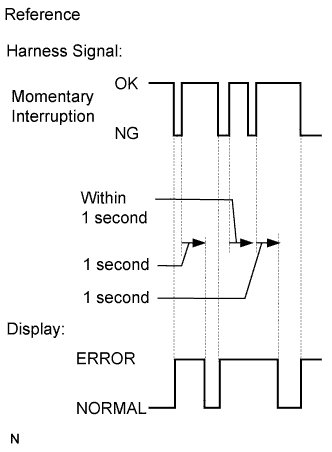
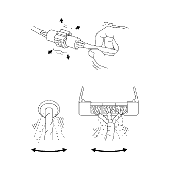

ANTI-LOCK BRAKE SYSTEM > CHECK FOR INTERMITTENT PROBLEMS |
| CHECK FOR INTERMITTENT PROBLEMS |
Turn the engine switch off.
Connect the intelligent tester to the DLC3.
Turn the engine switch on (IG).
Turn the intelligent tester on.
Enter the following menus: Chassis / ABS/VSC/TRC / Data List.
Select areas where momentary interruption should be monitored.
| Tester Display | Measurement Item/Range | Normal Condition | Diagnostic Note |
| FR Speed Open | Front speed sensor RH open detection/ERROR or NORMAL | ERROR: Momentary interruption NORMAL: Normal | - |
| FL Speed Open | Front speed sensor LH open detection/ERROR or NORMAL | ERROR: Momentary interruption NORMAL: Normal | - |
| RR Speed Open | Rear speed sensor RH open detection/ERROR or NORMAL | ERROR: Momentary interruption NORMAL: Normal | - |
| RL Speed Open | Rear speed sensor LH open detection/ERROR or NORMAL | ERROR: Momentary interruption NORMAL: Normal | - |
| EFI Communication Open | ECM communication open detection/ERROR or NORMAL | ERROR: Momentary interruption NORMAL: Normal | - |
 |
 |
While observing the screen, gently jiggle the connector or wire harness between the ECU and sensors, or between ECUs. If the display changes, the connector and/or wire harness is in momentary interruption (open circuit). Repair or replace the connector and/or wire harness, as one of them is faulty.